Residents at their activities (gap = distance from the resident to the nearest surface in front, at hand height)
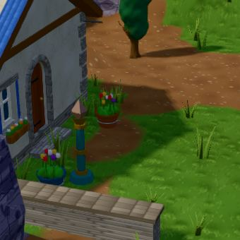
oda · knock · oda_home
gap 2.57 m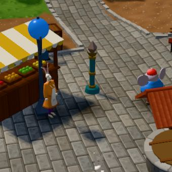
oda · browse · oda_stall
gap 1.09 m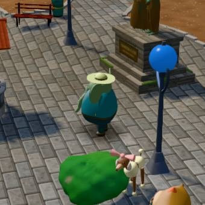
brix · warm · brix_well
gap 0.93 m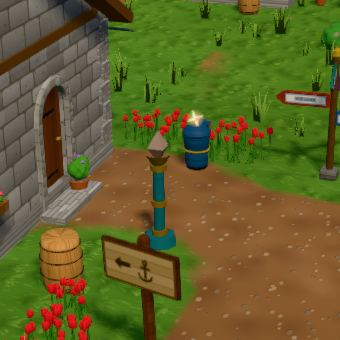
maro · knock · maro_home
gap 2.57 m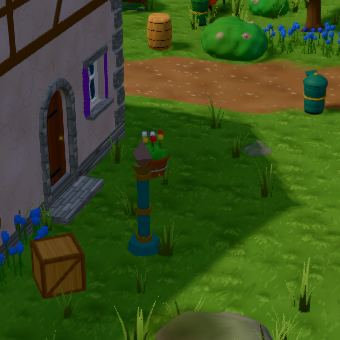
tilde · knock · tilde_home
gap 2.57 m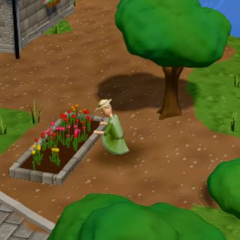
garrick · tend · gar_tend
gap 1.22 m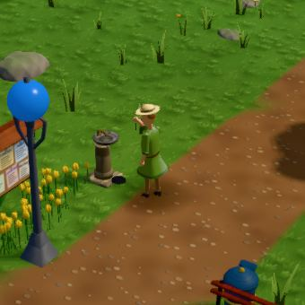
garrick · draw · gar_tap
gap 0.94 m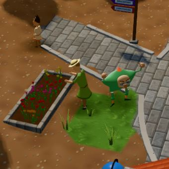
garrick · draw · gar_water
gap 1.94 m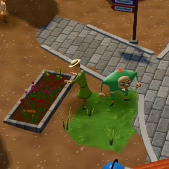
garrick · water · gar_water
gap 1.81 m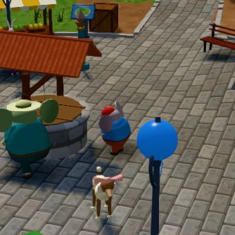
dot · dip · dot_peer
gap 0.82 m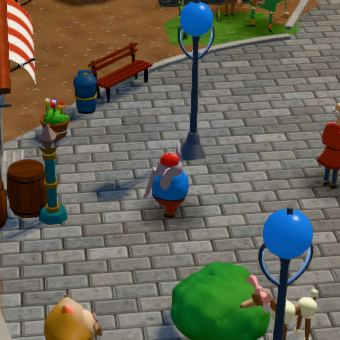
dot · warm · dot_c
gap 1.21 m inside?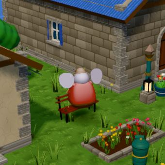
marda · warm · marda_b2
gap 0.95 m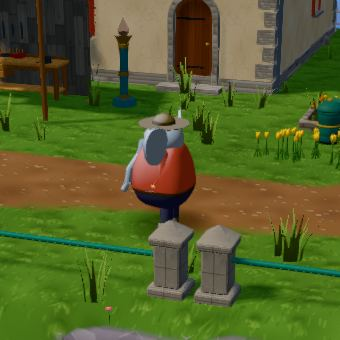
tobb · put · tobb_quay
gap 1.21 m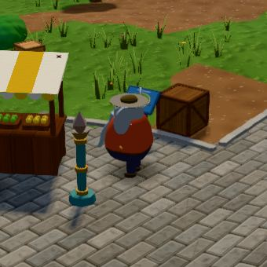
tobb · put · tobb_stall
gap 1.25 m